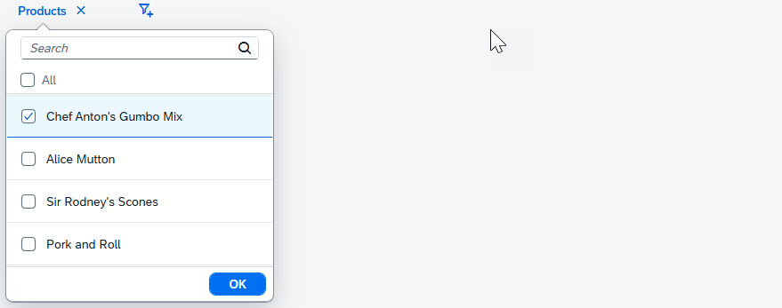

FacetFilterList.getSelectedItems() method returns a copy of each
selected facet filter item. You use the method to get the selected filter items when
filtering the target data set. Therefore, you should not attempt to modify any of the item's
properties.An application can support the personalization of settings and
allow the user to save the facet filter list selections as well as other properties
by means of a variant. For example, you can use getSelectedKeys to
retrieve an object containing all selected items and use JSON.stringify to marshall
and JSON.parse to unmarshall. After unmarshalling, you can use
setSelectedKeys to apply the selections to the list. The
following figure and code snippet give an example.

sap.ui.require([
"sap/m/FacetFilter",
"sap/m/FacetFilterList",
"sap/m/FacetFilterItem",
"sap/ui/model/odata/v2/ODataModel"
], function (FacetFilter, FacetFilterList, FacetFilterItem, ODataModel) {
var oDataModel = new ODataModel("/uilib-sample/proxy/http/services.odata.org/V3/Northwind/Northwind.svc");
// create the FacetFilterList and bind the filter items
const oFacetFilterList = new FacetFilterList({
title : "Products",
growing : true,
items : {
path : "/Products",
template : new FacetFilterItem({
text : "{ProductName}",
key : "{ProductID}"
})
},
listOpen : function(oEvent) {
if(!this.hasModel()) {
this.setModel(oDataModel);
}
},
});
// getSelectionsFromVariant() is an application method to retrieve
// selected keys from the backend. Selections were saved to the variant by persisting
// the result of 'getSelectedKeys' for each list. This is an object
// containing Product keys as properties and Product text as property values, for example:
/*
{
'5' : "Chef Anton's Gumbo Mix",
'17' : "Alice Mutton",
'21' : "Sir Rodney's Scones"
}
*/
const oSelectedKeys = getSelectionsFromVariant();
// Now preselect these items
oFacetFilterList.setSelectedKeys(oSelectedKeys);
const oFacetFilter = new FacetFilter({
lists : [ oFacetFilterList ]
});
});